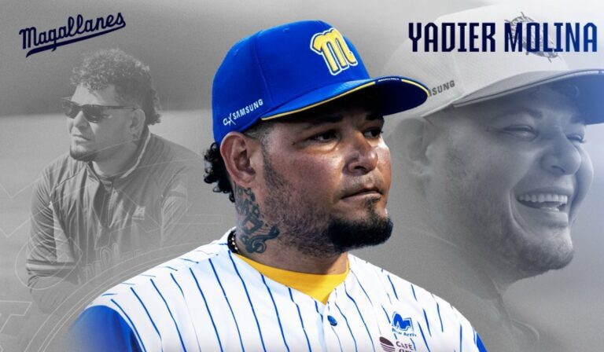

Ayer, los Navegantes del Magallanes hicieron oficial lo que muchos en la LVBP veían venir desde hace semanas: Yadier Molina vuelve a dirigir al equipo turco. La noticia se confirmó en horas de la tarde a través de un comunicado del club y rápidamente se regó por toda la región. La nota de prensa de la LVBP fue concisa, pero suficiente para encender la conversación: el boricua regresa al mando de la nave "para completar la temporada 2025-2026".
En Valencia, el ambiente huele otra vez a competencia seria. No se trata solo de un técnico experimentado, sino de una figura de peso continental que ha sabido trasladar su liderazgo de máscara y peto a la pizarra y el clubhouse.
El regreso del Capitán
El retorno de Molina al Magallanes tiene sabor a continuidad. En su primer ciclo (2022-2023), dejó récord positivo (29-27) y llevó al equipo al Round Robin, quedando a un paso de la final. Esa temporada, su manejo de pitcheo y de clubhouse fue elogiado incluso por rivales y analistas.
Ahora, tres años después, la nave lo busca no solo por su nombre, sino por su visión moderna del béisbol caribeño, una mezcla de disciplina de Grandes Ligas y calor de liga invernal.
"Yadier entiende el ADN de este torneo, pero no renuncia al orden. Por eso encaja aquí: puede exigir y al mismo tiempo hablarle al pelotero caribeño en su propio idioma".
El anuncio ocurre en un contexto donde Magallanes necesita estabilidad. La novena ha tenido altibajos en la primera mitad de la temporada, y Molina llega como el antídoto natural: un hombre que conoce el camerino, el circuito y el ritmo del Caribe.
De Valencia a Caguas: el salto de credibilidad
Después de aquella primera experiencia en Venezuela, Molina tomó las riendas de los Criollos de Caguas en la Liga de Béisbol Profesional Roberto Clemente (LBPRC). Allí se vio una versión más madura del técnico. Su Caguas fue campeón de Puerto Rico en 2023-2024 y representó a la isla en la Serie del Caribe celebrada en Miami.
La prensa boricua, encabezada por El Nuevo Día y Primera Hora, resaltó su capacidad para administrar egos y rotaciones cortas, una habilidad que muchos exjugadores no logran dominar de inmediato.
En la Serie del Caribe, Molina mostró su estilo: lineups cortos, énfasis en el bullpen y mucha comunicación directa con sus peloteros. Puerto Rico quedó eliminado por criterio TQB tras un triple empate, pero el torneo confirmó que el exreceptor de los Cardinals no era un nombre decorativo: era un dirigente real.
 Yadier Molina, el Capitán que cambió de trinchera para seguir liderando.Entre Santiago y la madurez
En octubre de 2024, los Águilas Cibaeñas anunciaron su contratación en la LIDOM. La noticia sorprendió incluso en Puerto Rico y Venezuela: pocos dirigentes han tenido la oportunidad de comandar en tres ligas caribeñas diferentes en menos de cuatro años.
En República Dominicana, Molina encontró un entorno exigente, con un público que vive el béisbol con la misma intensidad que el oxígeno. Las Águilas, en plena reconstrucción, encontraron en él un líder táctico y emocional.
Durante la temporada 2024-2025, su equipo se recuperó tras un arranque irregular y clasificó al Round Robin. Los reportes de Listín Diario y Diario Libre coincidieron en algo: el boricua logró reinstalar la disciplina y la mística en el dugout. Fue nombrado Dirigente del Año de LIDOM, reconocimiento que elevó aún más su perfil como estratega regional.
El alma de la isla
En paralelo a sus incursiones en ligas invernales, Molina asumió otro compromiso mayor: la dirección de la selección nacional de Puerto Rico.
Fue nombrado mánager para el Clásico Mundial de Béisbol 2023, torneo en el que llevó a su país hasta los cuartos de final antes de caer en un inolvidable duelo ante México (5-4). Su papel como líder de un roster repleto de figuras —Francisco Lindor, Javier Báez, Edwin Díaz— confirmó su peso en el ámbito internacional.
En abril de 2025, la Federación de Béisbol de Puerto Rico anunció su ratificación como mánager para el Clásico de 2026, un voto de confianza que demuestra que su visión y compromiso trascienden los torneos invernales.
Un puente entre generaciones
Aunque su nombre sigue asociado a los Cardinals de San Luis, tanto por su brillante carrera de 19 temporadas como por su rol más reciente como asesor en operaciones de béisbol, Molina ha dejado claro que su labor de dirigente se está forjando en el Caribe.
Su paso por las oficinas de los Cardinals —confirmado por ESPN en diciembre de 2023— fue más bien un guiño al futuro, pero sus raíces y su crecimiento están en los estadios de Valencia, Caguas y Santiago.
En un panorama donde cada vez más técnicos latinos buscan espacio en organizaciones de MLB, Molina está haciendo el camino inverso: del Caribe hacia el norte, construyendo credenciales en el terreno donde aprendió a competir.
El dirigente como espejo
Lo que distingue a Yadier Molina de otros exjugadores es su adaptabilidad emocional. No se presenta como una figura distante, sino como un hombre que todavía respira el juego desde adentro.
En los dugouts del Caribe, lo ven gritar, bromear, protestar y abrazar. En cada turno, su mirada va del catcher al bullpen como si aún llevara el número 4 en la espalda.
Dirigir en el Caribe te obliga a ser creativo. Aquí los fanáticos sienten cada out. No hay margen para la desconexión. Si no vives el juego, te pasa por encima.
Esa pasión lo ha convertido en un símbolo de la nueva generación de dirigentes caribeños: técnicos que combinan lectura estadística y sensibilidad humana, analítica moderna y tradición.
De regreso al Caribe profundo
Su segunda llegada al Magallanes es más que una noticia de contratación: es la confirmación de una travesía.
El equipo turco lo espera como un referente capaz de estabilizar una plantilla joven y competitiva. En los últimos años, Magallanes ha oscilado entre la reconstrucción y la búsqueda de identidad. La figura de Molina aparece como el eje que puede devolver equilibrio y dirección.
Según LVBP.com, el contrato abarca lo que resta de temporada, con posibilidad de extensión según resultados. Para la directiva, su presencia representa liderazgo, comunicación bilingüe y conocimiento del terreno.
Un currículo caribeño de peso
Hoy, con apenas 43 años, Yadier Molina acumula una experiencia que pocos dirigentes latinoamericanos pueden igualar.
Campeón en Puerto Rico, mánager de selección nacional, paso exitoso por LIDOM y dos ciclos con Magallanes: un recorrido que habla de consistencia, respeto y hambre de seguir aprendiendo.
No se trata de un adiós a su legado como pelotero, sino de una nueva narrativa: la del Capitán convertido en estratega, moldeado por el calor de los estadios caribeños, forjado entre viajes cortos, pelotas húmedas y bullpens eternos.
El cierre de un ciclo, el inicio de otro
Mientras el Magallanes ajusta su rotación y los fanáticos sueñan con otra final, Yadier Molina vuelve a ponerse el uniforme azul, ahora con una libreta en la mano y el mismo fuego en la mirada.
Su historia demuestra que el béisbol, más que una carrera, es un idioma que se habla de muchas maneras. En su caso, el Caribe ha sido su mejor aula: un espacio donde la experiencia se convierte en sabiduría y donde el respeto al juego vale más que cualquier cifra.
Desde Valencia hasta Caguas, desde Santiago hasta Miami, el recorrido de Molina confirma algo que en el Caribe siempre se ha sabido: los grandes capitanes no se retiran, simplemente cambian de trinchera.